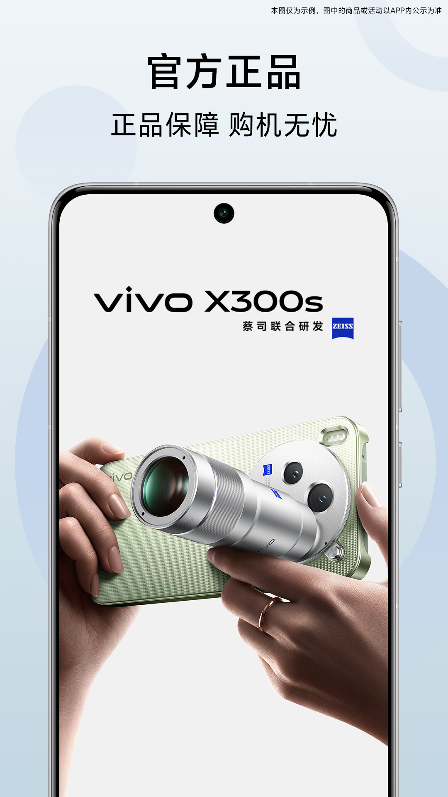
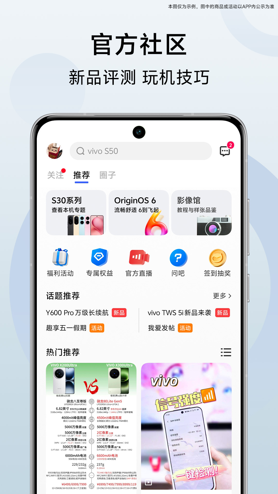

vivo 官网 App 上手：从零到会用的五分钟通关
第一次装 vivo 官网 App 不知道从哪开始？这篇带你用五分钟把下载安装、社区签到、积分抵现三件事跑通，新手也能直接上手。
这篇文章能带你从完全不懂到用起来——不需要任何基础，跟着点就行。
它到底是干嘛的
你可以把 vivo官网 App 想象成一家"开在手机里的 vivo 官方专卖店 + v 粉俱乐部"。一半功能是买手机、查订单、领国补这些实打实的购物操作；另一半是社区、签到、积分这些给 vivo 用户玩的内容。如果你刚入坑 vivo，或者手里有一台 vivo 手机但从来没开过这个 App，装一个不亏——很多会员权益只有这里能领。

五分钟上手：从下载安装到第一次跑通
不说空话，直接走一遍最短路径。
第一步：下载安装
想要 Android 安装包的话可以从官方下载拿，或者打开手机自带的应用商店（vivo 手机自带的那个叫"应用商店"），搜"vivo 官网"，认准开发者是"维沃移动通信有限公司"的那个，点安装。装完桌面会出现一个橙色的小图标。
第二步：登录账号
第一次打开会提示登录。如果买 vivo 手机时注册过账号，直接用手机号 + 密码或短信验证码登就行。没有账号的当场注册一个，一分钟搞定。登录后 App 才能识别你是哪台手机的主人，订单、保修、积分这些都跟账号绑在一起。
第三步：签到拿积分
进到首页，底部一排有个"社区"按钮，点进去就能看到签到入口。第一次签到直接给几十积分，连续签到还会递增。积分这个东西后面能抵钱、能换周边，先签到攒着。
就这三步，五分钟之内绝对能跑完。跑通之后你已经有账号、有积分了，接下来就是解锁真正好用的功能。
上手后先玩这三个功能
新手最值得先碰的三个点，每个都说清楚"你会看到什么"和"这意味着什么"。
社区频道：看评测、问问题、抽福利
点底部"社区"按钮进去，你会看到一个信息流页面——上面有新品开箱、玩机技巧、影像教程这些内容，有点像微博但只聊 vivo 的东西。
这意味着什么呢？如果你正在犹豫买哪台 vivo 手机，这里是最快能看到真实用户上手体验的地方。新机发布前后，首发开箱帖、参数对比帖会集中冒出来，比网上搜来的零碎信息靠谱。社区里还有个"问吧"板块，购机拿不定主意时可以发个提问，通常会有老用户或者官方的人来回答。
另外社区里常年挂着签到抽奖、有奖问答这些福利活动，攒积分的速度比单纯签到快得多。
积分抵现：下单时直接抵扣真金白银
积分除了在商城换礼品，最实在的用法是买手机或配件时直接抵现金。你下订单到结算页时，会看到一个"积分抵扣"的勾选框，点开就能选要抵多少。
规则先说清楚：每 100 积分抵 1 块钱，100 的整数倍才能用。抵扣上限跟你是普通会员还是白银、黄金、钻石会员有关——普通会员买手机最多抵实付金额的 1%，钻石会员能抵到 4%。买配件的比例更高，普通会员都能抵 5%。
这意味着什么呢？如果你手里攒了 5000 积分，买配件时直接抵 50 块，跟优惠券能叠加用。有一点要注意：积分有效期一般一年，快过期的优先抵现，别让它白白清零。积分商城的完整兑换规则和会员权益表可以去vivo文档查。
我的手机：查激活时间、电子保卡、订单全记录
点底部"我的"，最上面有个"我的手机"入口，进去之后你会看到绑定到这个账号的所有 vivo 设备列表，每台设备都显示激活时间、保修状态。
这意味着什么呢？新手机到手第一件事就是来这里确认一下——激活时间对不对、保修有没有正常生效，有问题趁早联系客服。买二手机的话，这里查一下就能知道是不是还在保。另外所有订单也在"我的 → 全部订单"里，物流轨迹实时显示，顺丰发货的话一般两三天到。

小白的三个常见疑问
收货时需要注意什么？
快递到了别着急签收。三件事按顺序做：先看包裹和手机盒有没有破损，破了当场拍照拒收；然后手机拨号盘输入 *#06# 弹出 IMEI，跟包装盒和三包凭证上的对一下，三个地方的数字必须完全一致；最后包装盒、发票、赠品都留好，7 天无理由退货和售后都会用到。享受政府补贴的订单还有额外要求——签收后 7 天内要当面拆封开机联网配合拍照，这个别忘。
怎么联系人工客服？
自助解决不了就找人工。最常用的是 95033 热线，7×24 小时都有人接，订单、退款、账号问题打这个就行。折叠屏和旗舰用户还有个尊享热线 400-679-9688。需要截图沟通的比如支付失败、活动异常，就走应用内的在线客服入口。
找客服之前把信息备齐：订单号、支付截图、问题发生时间和现象，涉及设备的带上 IMEI 和购买凭证。一次说清楚，来回扯皮的概率就小很多。
防骗提醒一定要记：官方客服不会要你密码、不会要完整验证码、不会让你转账到任何"安全账户"。接到"取消会员""退款理赔"的电话直接挂，自己打 95033 核实。
积分会过期吗？
会。积分有效期一般是自获得之日起一年，快过期的系统会提醒。前面说过，快过期的优先用来抵现兜底，长期积分可以留着换实物礼品——积分商城里有些东西的价值密度比 1% 抵现划算。退订单的时候抵现用掉的积分会按实际退款金额退回，一般 1 到 3 个工作日到账。
以上就是 vivo 官网 App 新手入门的全部内容。装起来用几天，你会发现它不只是个购物 App，更是 vivo 用户身份的管理中心和权益入口。进阶的玩法可以继续研究社区的影像馆板块，里面有很多拍照技巧教程。对了，这套 vivo 相关的资料我分别放在了 GitHub、Gitee 和 GitCode，国内访问 Gitee 速度更稳一些。祝用机愉快。